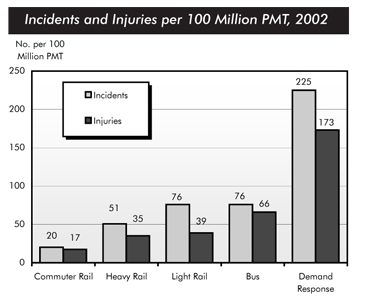

You should spend about 20 minutes on this task.
The chart below shows numbers of incidents and injuries per 100 million passenger miles travelled (PMT) by transportation type in 2002.
Summarise the information by selecting and reporting the main features and make comparisons where relevant.
Write at least 150 words.

The bar chart compares the number of incidents and injuries for every 100 million passenger miles travelled on five different types of public transport in 2002.
It is clear that the most incidents and injuries took place on demand-response vehicles. By contrast, commuter rail services recorded by far the lowest figures.
A total of 225 incidents and 173 injuries, per 100 million passenger miles travelled, took place on demand-response transport services. These figures were nearly three times as high as those for the second highest category, bus services. There were 76 incidents and 66 people were injured on buses.
Rail services experienced fewer problems. The number of incidents on light rail trains equalled the figure recorded for buses, but there were significantly fewer injuries, at only 39. Heavy rail services saw lower numbers of such events than light rail services, but commuter rail passengers were even less likely to experience problems. In fact, only 20 incidents and 17 injuries occurred on commuter trains.
(165 words, band 9)
You should spend about 40 minutes on this task.
People in all modern societies use drugs, but today's youth are experimenting with both legal and illegal drugs, and at an increasingly early age. Some sociologists claim that parents and other members of society often set a bad example.
Discuss the causes and some effects of widespread drug use by young people in modern day society. Make any recommendations you feel are necessary to help fight youth drug abuse.
Give reasons for your answer and include any relevant examples from your own knowledge or experience.
Write at least 250 words.
The people of the Modern world are always in search of new enjoyments and new attractions. While drugs are lifesavers when they are taken for the health issue and prescribed by the doctors, it can also be fatal if taken for temporary amusement. Many special drugs, pills and similar things of that kind are abused by young people and it is a big threat to the future of next generations of the society.
This habit starts with smoking and end in fatal addiction in some seriously addictive substances. Because it is legal for the teenagers who are above the age of 16 in many crowded countries or smoke, they start smoking. Then, the issue gets worse and youth want to experience more powerful substances for temporary joy and excitement. A large number of practitioners think it is mainly the fault of parents and responsible relatives or friends. Because youth mostly take examples from them, any bad habit of parents would greatly influence the youth. The family disparity can very negatively affect youth and many times they abuse drugs to get read of the reality or complexity. If parents smoke and drink alcohol, the young children might adapt this habit easily.
Another peril is the people and friends with whom young people live and spend time. The groups of teenagers who abuse drugs might induce the innocents. A big cause of widespread drug use is exactly the influence of the environment and friends. Although well-mannered parents send their children to schools to get some quality educations and cultures, in some schools the drug abusers induce them to do wrong things.
In my opinion, some prevention measures have to be taken for the welfare of youth. School authority and teachers should make them well disciplined and manage a nice and rigid system in schools that would prevent young children to proceed to wrong ways. The government should make sure that the illegal substances and drugs are not available and should make sure no young people can get it without the authorised prescriptions and parental guidance. Parents should be more attached to their kids and should live ideal life to set an example for your kids.